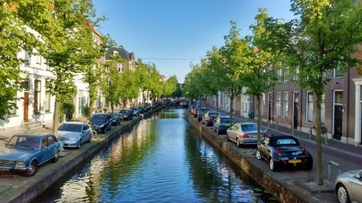
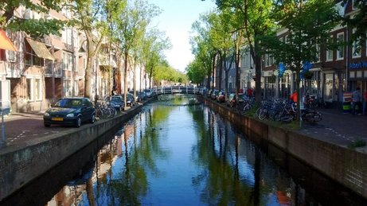

پیادهروی در دلفت-عصر دوازده جون دوهزار و پانزده
گل نیلوفر آبی. یعنی نیلوفری که در آب میروید. دنبال رنگ آبیاش میگردم که هنوز پیدا نکردهام. بیشترشان سفید و زردند و تک و توکی صورتی.
گل نیلوفر آبی. یعنی نیلوفری که در آب میروید. دنبال رنگ آبیاش میگردم که هنوز پیدا نکردهام. بیشترشان سفید و زردند و تک و توکی صورتی.

سمت چپ پلی که در مرکز عکس میبینید، یا نمیبینید چون خیلی کوچک است، یک بستنی فروشی فصلی است. طول صف مشتریها نسبت مستقیم دارد با دمای هوا و حضور خورشید. من بستنی لیمویی دوست دارم. مریم شکلاتی و آیدا فکر میکند توتفرنگی. بستنیها را که میخریم آیدا بستنی من را امتحان میکند و با هم عوض میکنیم.

باز هم یکی از کانالهای دلفت. سمت راست عکس تابلوی آبی رنگ آلبرت-اَین است. یکی از سوپرمارکتهای زنجیرهای معروف هلند. اولین خرید ما در هلند از شعبه دیگر همین فروشگاه بود. تخممرغ و روغن و نان تست. نمک نخریده بودم. فکر کنم غذای هواپیما را با خودمان آورده بودیم و نمکش را زدیم به نیمرو. خیلی چسبید ولی از مزه نان تست بدمان آمد. چند سالی طول کشید تا عادت کنیم به این نان مقوی و سالم و مناسب برای دستگاه گوارشی.